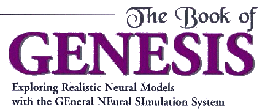

Internet Edition
(C) 2003 James M. Bower and David Beeman
Permission to use, copy, and distribute this material in printed or electronic
form, for any purpose and without fee, is hereby granted, provided that this
copyright notice appears with all copies.
These are the Portable Document Format (PDF) files for "The Book of GENESIS".
If your browser has a helper or plugin for viewing PDF files, you may read
these chapters from these links. Otherwise, change into this directory
(iBoGpdf) and use Acrobat Reader (acroread) or xpdf to view the files.
Acrobat Reader seems to do a better job of rendering the equations. If one of
the equations doesn't look right, try zooming in on it.
Preface
- titlepage.pdf -- The "Book of GENESIS"
title page containing the copyright notice, which should be included with
any printed or electronic copies.
- preface.pdf - Preface to the Internet
Edition, with updated information
- frontmatter.pdf - Contains the original
second edtition preface, contributors, and table of contents
Part I - Neurobiological Tutorials with GENESIS
- chapt1.pdf - Introduction - James
M. Bower and David Beeman
- chapt2.pdf - Compartmental Modeling -
James M. Bower and David Beeman
- chapt3.pdf - Neural Modeling with GENESIS -
James M. Bower and David Beeman
- chapt4.pdf - The Hodgkin-Huxley Model -
Mark Nelson and John Rinzel
- chapt5.pdf - Cable and Compartmental Models of
Dendritic Trees - Idan Segev
- chapt6.pdf - Temporal Interactions Between
Post-Synaptic Potentials - Idan Segev
- chapt7.pdf - Ion Channels and Bursting
Neurons - David Beeman and James M. Bower
- chapt8.pdf - Central Pattern
Generators - Sharon Crook and Avis Cohen
- chapt9.pdf - Dynamical Properties of Cerebral
Cortical Networks - James M. Bower and Alex Protopapas
- chapt10.pdf - The Network Within:
Signaling Pathways - Upinder S. Bhalla
Part II - Creating Simulations with GENESIS
- chapt11.pdf - Constructing New Models - James M. Bower
- chapt12.pdf - Introduction to GENESIS
Programming - David Beeman and Matthew A. Wilson
- chapt13.pdf - Simulating a Neuron Soma - David Beeman
- chapt14.pdf - Adding Voltage-Activated Channels - David Beeman
- chapt15.pdf - Adding Dendrites and Synapses - David Beeman
- chapt16.pdf - Automating Cell Construction with
the Cell Reader - David Beeman
- chapt17.pdf - Building a Cell With Neurokit - David Beeman
- chapt18.pdf - Constructing Neural Circuits
and Networks - Michael Vanier and David Beeman
- chapt19.pdf - Implementing Other Types
of Channels - David Beeman
- chapt20.pdf - Speeding Up GENESIS
Simulations with hsolve - Erik De Schutter and David Beeman
- chapt21.pdf - Large-Scale Simulation using
Parallel GENESIS - Nigel H. Goddard and Greg Hood
- chapt22.pdf - Advanced XODUS Techniques:
Simulation Visualization - Upinder S. Bhalla
- fin.pdf - Includes appendices with script listings,
bibliography and indices
For further information and downloads, see:
GENESIS WWW site: http://www.genesis-sim.org/GENESIS/
email: genesis@genesis-sim.org